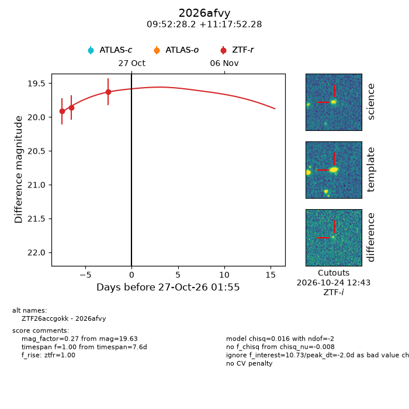
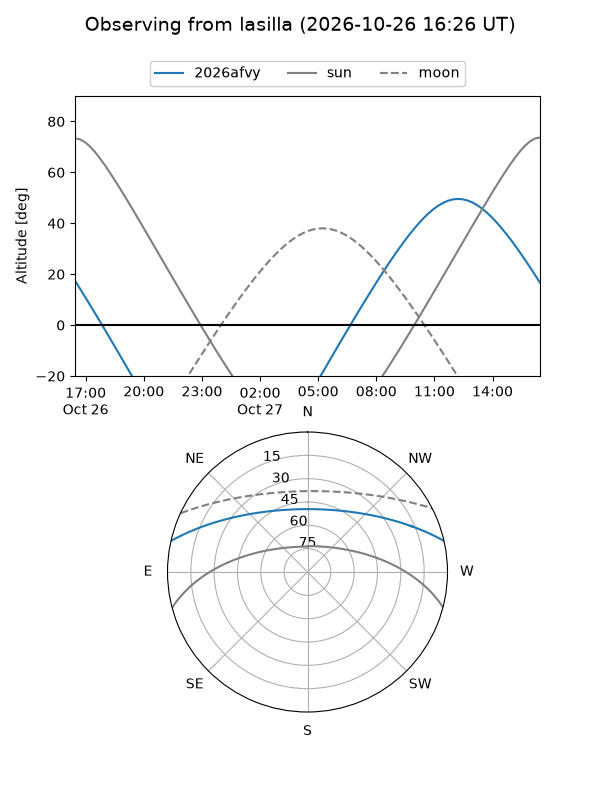
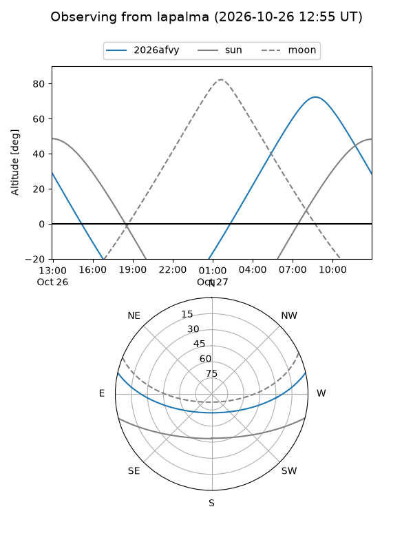
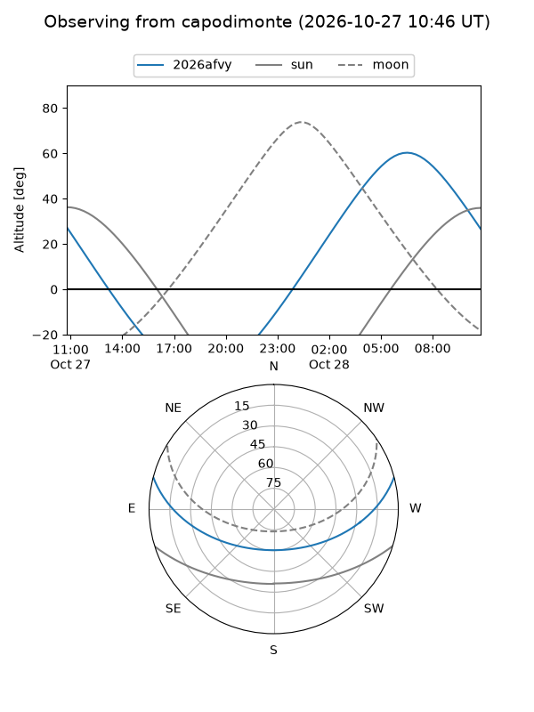
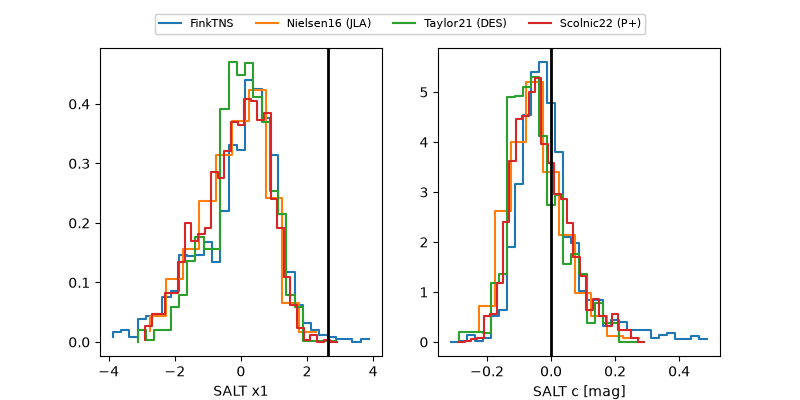

2026afvy
Target 2026afvy at 2026-10-27 13:53
Aliases and brokers:
FINK-ZTF: ztf.fink-portal.org/ZTF26accgokk
Lasair-ZTF: lasair-ztf.lsst.ac.uk/objects/ZTF26accgokk
ALeRCE-ZTF: alerce.online/object/ZTF26accgokk
YSE-PZ: ziggy.ucolick.org/yse/transient_detail/2026afvy
TNS name: wis-tns.org/object/2026afvy
Direct TNS query: direct search
alt names
ZTF26accgokk (ztf,fink_ztf)
2026afvy (tns,yse)
Coordinates:
equatorial (ra, dec) = 148.1176,+11.29786
equatorial (HMS+DMS) = 09:52:28.23,+11:17:52.28
galactic (l, b) = (224.6555,+45.17210)
Flags:
peak dt: -1.5
Photometry:
last ztfr=19.63
3 ztfr detections
Lightcurve

Visibility



Additional plots
